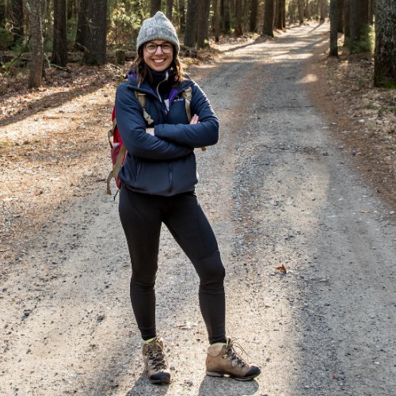

<div class="introduction-section">
    <!-- <h1>On Thin Ice</h1>

    <p>
        Lakes around the world face rapidly warming temperatures coupled with shorter winters.
        These threats facing our lakes have an impact on the surface ice formation and coverage in winter and can impact
        growth
        of lake algae and their interactions with other aquatic organisms. Increased algal blooms threaten
        water quality, drinking water supply, and recreation, as well as energy flow through food webs.
    </p>

    <h1>Project Discription</h1>
    <p>
        In this project, researchers will mimic climate-induced changing lake futures by studying U.S.
        lakes from north to south, and ranging from ice covered to ice free in winter months. Their research
        will examine algal growth and interactions on a year-round scale using field observations, experiments
        and high-frequency environmental sensors, and will employ predictive modeling to assess how changes
        in climate will affect lake ecosystem structure and function. Broader Impacts will be achieved through
        the vehicles of community science, training of undergraduate and graduate researchers, and public
        engagement.
        Workforce development initiatives will provide training for water treatment plant operators at drinking
        water
        reservoirs and high school students. By engaging youth and community scientists, these partners/participants
        will be trained to actively serve as stewards of water quality in their respective communities, empowering
        them
        to be knowledgeable and engaged in research related to climate impacts on lake ecosystems.
    </p> -->
    <!-- Holds the team members -->
    <div class="team-members-container">
        <!-- Title of this section of the page -->
        <h1 id="team-members" class="team-members-title">Meet The Team</h1>
        
        <!-- HTML for PI's -->
        <h2 class="pi-members-title">Principal Investigators</h2>
        <div class="pi-members-container">
            <div class="pi-member">
                
                <p class="pi-member-description">Dr. David C. Richardson<br>Professor<br>State University of New York at New Paltz</p>
            </div>
            <div class="pi-member">
                
                <p class="pi-member-description">Dr. Isabella A. Oleksy<br>Assistant Professor<br>University of Colorado Boulder</p>
            </div>
            <div class="pi-member">
                
                <p class="pi-member-description">Dr. Meredith Holgerson<br>Assistant Professor<br>Cornell University</p>
            </div>
            <div class="pi-member">
                
                <p class="pi-member-description">Dr. Mindy Morales-Williams<br>Associate Professor<br>Rubenstein School</p>
            </div>
            <div class="pi-member">
                
                <p class="pi-member-description">Dr. Rebecca North<br>Associate Professor<br>University of Missouri</p>
            </div>
        </div>

        <!-- HTML for other collaborators -->
        <h2 class="other-collaborators-title">Other Collaborators & Participants</h2>
        <div class="other-collaborators-container">
            <div class="other-member">
                <p class="other-member-description">Adeline Kelly<br>University of Colorado Boulder</p>
            </div>
            <div class="other-member">
                <p class="other-member-description">Andrea Price<br>University of Missouri</p>
            </div>
            <div class="other-member">
                <p class="other-member-description">Kiyoko Yokota<br>State University of New York at Oneonta</p>
            </div>
            <div class="other-member">
                <p class="other-member-description">Danielle Wain<br>7 Lakes Alliance</p>
            </div>
            <div class="other-member">
                <p class="other-member-description">Matt Farragher<br>7 Lakes Alliance</p>
            </div>
            <div class="other-member">
                <p class="other-member-description">Ellie Socha<br>Cornell University</p>
            </div>
            <div class="other-member">
                <p class="other-member-description">Lesley Knoll<br>Miami University (Ohio)</p>
            </div>
            <div class="other-member">
                <p class="other-member-description">Kattie Gannon<br>University of Colorado Boulder</p>
            </div>
            <div class="other-member">
                <p class="other-member-description">Abby Ross<br>University of Colorado Boulder</p>
            </div>
            <div class="other-member">
                <p class="other-member-description">Kloe Atwood<br>Miami University (Ohio)</p>
            </div>
            <div class="other-member">
                <p class="other-member-description">Scott Higgins<br>IISD-ELA</p>
            </div>
            <div class="other-member">
                <p class="other-member-description">Allison Hrycik<br>Rensselaer Polytechnic Institute</p>
            </div>
            <div class="other-member">
                <p class="other-member-description">Courtney Wigdahl<br>Fredonia</p>
            </div>
            <div class="other-member">
                <p class="other-member-description">Corsette Bast (Jordan)<br>SUNY Oneonta</p>
            </div>
        </div>

    </div>
</div>